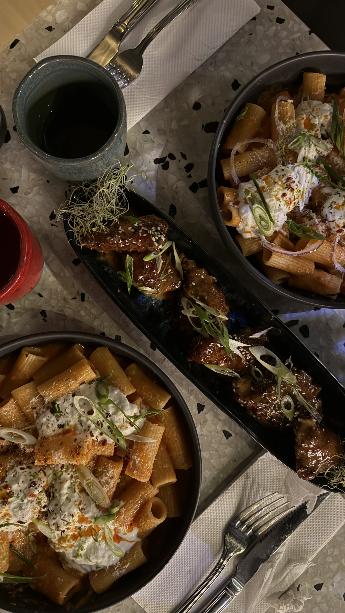
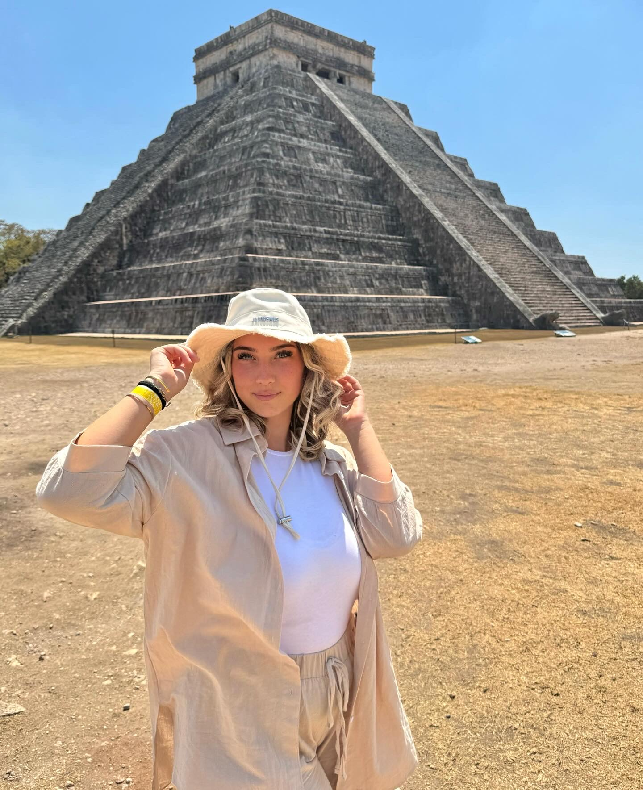
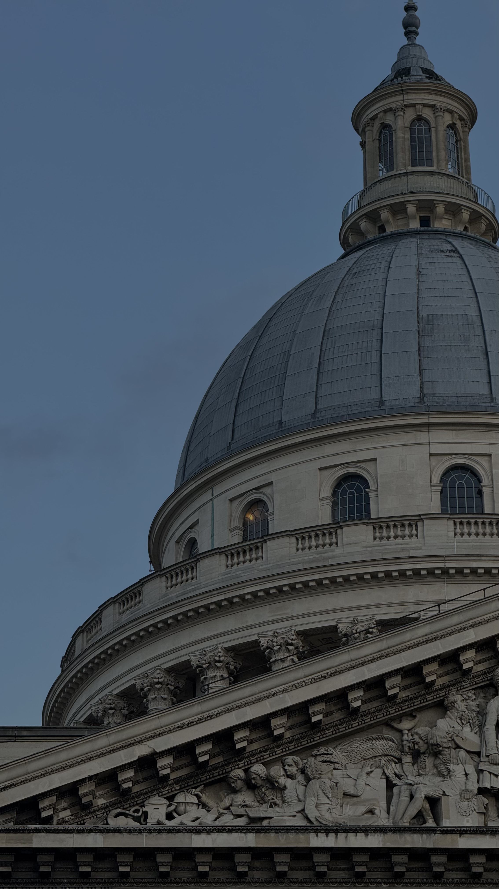
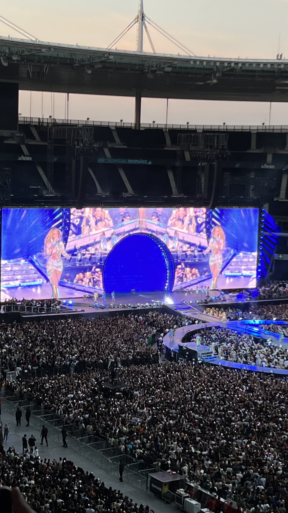

Passionnée par le marketing digital et la communication, je combine mon apprentissage chez KEDGE en MS Marketing Digital et Data avec mon rôle de chef de projet marketing réseau chez TotalEnergies.
Mon LinkedinAprès l'obtention de mon Baccalauréat Sciences et technologies du management et de la gestion, j'ai décidé de poursuivre mes études avec une licence Administration économique et sociale à l'université de Paris Nanterre. Par la suite, j'ai opté pour une école de commerce, l'ISC Paris, afin d'y étudier mon Master en marketing et communication digitale. Afin d'acquérir plus d'expérience dans ce domaine, je suis aujourd'hui étudiante à KEDGE BS afin d'y étudier un Mastere spécialisé en Marketing digital & DATA.
J'ai réalisé ma première alternance au sein du groupe Carrefour en tant que chef de Projet de CRM, durant cette expérience j'ai pu accompagner des hypermarchés, supermarchés et magasins de proximité Carrefour en adressant des communications (email, push notification, sms, courrier) et des offres adaptées selon le comportement d’achat client. Aujourd'hui, je suis chef de projet au marketing réseau de TotalEnergies. Groupe au sein duquel j'ai la chance de piloter le projet Tour de France 2024 !
De mon temps libre j'aime voyager, découvrir de nouveaux restaurants, capturer de jolis paysages avec mon appareil et aller à des concerts.
   